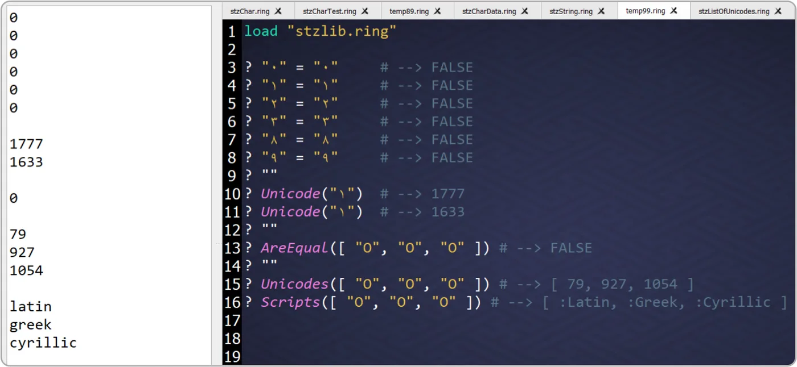

Unmasking Unicode Lookalikes
Are "۰" and "٠" the same? No! Neither are "۱" and "١," "۲" and "٢," or "۳" and "٣."
par Mansour Ayouni · dans le dépôt depuis le 2024-12-31 · essai de fonction · domaine Chaînes de caractères
Cet article est écrit en anglais, comme la bibliothèque.

The world of Unicode characters is vast, and sometimes tricky, especially when visually similar characters are actually different. Let's explore this with examples and see how Softanza offers a solution.
The Problem
Here's what happens when we check for equality in Haro:
? "۱" = "١" #--> FALSE ? "۲" = "٢" #--> FALSE ? "۳" = "٣" #--> FALSE ? "۸" = "٨" #--> FALSE ? "۹" = "٩" #--> FALSE ```` Surprising, right? It doesn't stop there. "O", "Ο", and "О" look almost identical, but they're distinct: ```ring ? "O" = "Ο" #--> FALSE ? "O" = "О" #--> FALSE ? "Ο" = "О" #--> FALSE
illustration
This poses security risks, as attackers could exploit these visual tricks. Luckily, Softanza helps detect and handle these situations.
Softanza Unveils the Unicode Secret!
Softanza's Unicode() function reveals a character's true identity:
load "stzlib.ring"
? Unicode("۱") #--> 1776
? Unicode("١") #--> 1632illustration
These characters look similar but are fundamentally different. AreEqual() confirms this:
? AreEqual("۱", "١") #--> FALSEillustration
You can also check sets of visually identical characters:
? AreEqual(["O", "Ο", "О"]) #--> FALSE ? Unicodes(["O", "Ο", "О"]) #--> [ 79, 927, 1054 ]
illustration
Why Does This Happen?
Unicode assigns a unique code point to each character, focusing on identity, not appearance (glyph). For example:
- Latin "O" →
79 - Greek "Ο" →
927 - Cyrillic "О" →
1054
They look the same but belong to different scripts. Softanza's Scripts() function shows this:
? Scripts(["O", "Ο", "О"]) #--> [ "latin", "greek", "cyrillic" ]
illustration
The Hidden Threat: Invisible Characters and Security Implications
The security risks extend beyond visually similar characters. Consider invisible characters. These aren't empty; they're characters that render as whitespace or have no visual representation. This might seem harmless, but it can be exploited.
Remember the Twitter incident? Attackers used zero-width characters to bypass filters, create misleading profiles, or even disrupt timelines. These invisible characters, inserted into usernames or tweets, were nearly impossible for users to detect visually, allowing for impersonation and other malicious activities.
Softanza provides tools to address this threat. Let’s look at an example:
c = "" // This contains a LEFT-TO-RIGHT MARK ? IsEmpty(c) #--> FALSE ? Unicode(c) #--> 8206 ? CharName(c) #--> LEFT-TO-RIGHT MARK ? ShowShortNL( NamesOfInvisibleChars() ) #--> [ # "<control>", # "SPACE", # "NO-BREAK SPACE", # "...", # "HANGUL FILLER", # "HANGUL CHOSEONG FILLER", # "HALFWIDTH HANGUL FILLER" # ]
illustration
As you can see, IsEmpty() correctly identifies that the string is not empty. Unicode() reveals the character's code point, and CharName() provides its name. The NamesOfInvisibleChars() function gives a comprehensive list of such characters. Softanza gives you the tools to detect and neutralize these hidden threats.
NOTE: The
ShowShort()function generates a concise version of the list, displaying 3 items from the start and 3 from the end by default. The extended form,ShowShortXT(aList, n)orShowShortXT(aList, [n1, n2]), allows customization of the number of items shown (n items from both ends or n1 from the start and n2 from the end).
Finally, See it in Action!
Here is a snapshot from my Haro Notepad:
Citer
Mansour Ayouni. « Unmasking Unicode Lookalikes ». Softanza narrations, 2024. https://mayouni.github.io/stzsite/fr/narrations/stz-unmasking-unicode-lookalities-narration.html
Non exécuté : son code touche aux fichiers, au réseau, à l'horloge ou au hasard. L'article est publié tel qu'il est écrit ; ses blocs sont des illustrations. Le code des articles est du code Haro. Là où un article a été écrit avant que la langue prenne son nom actuel, le nom a été changé et rien d'autre. Genre, domaine et série lus dans le nom du fichier, année tirée du premier commit : dérivés, jusqu'à ce que l'article porte son propre en-tête. Le fichier sur GitHub(s'ouvre dans un nouvel onglet)